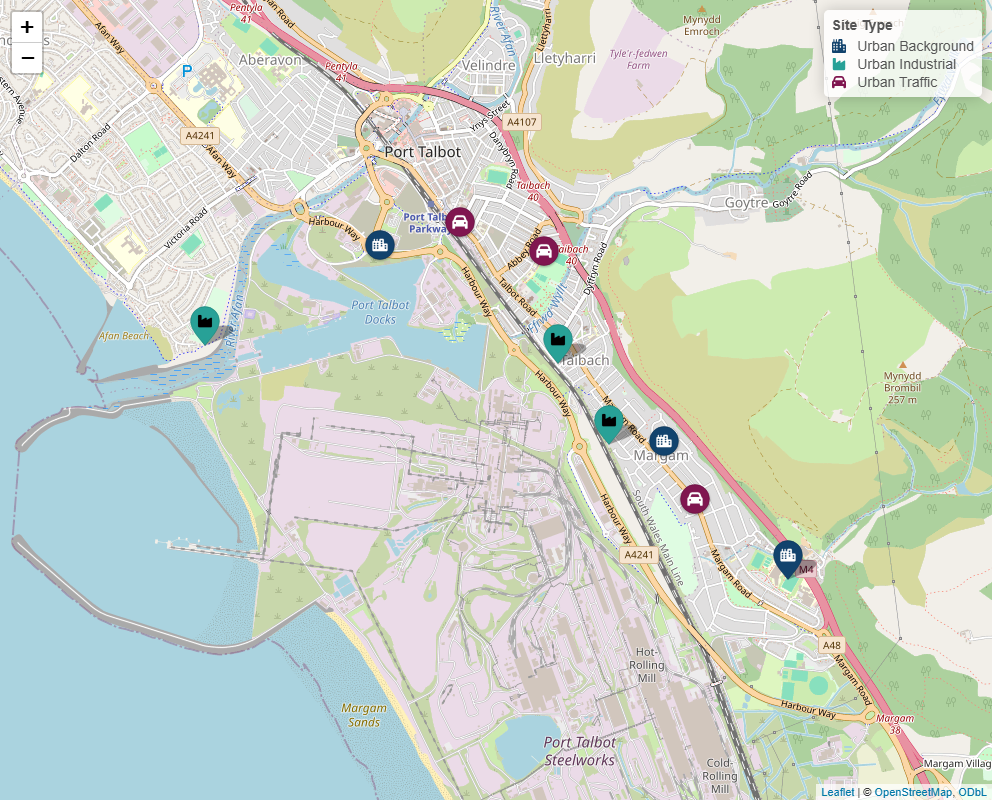

The goal of leaf.magic is to overcome the somewhat outdated “Font Awesome” implementation in vanilla R leaflet by constructing SVG markers on the fly using modern icon libraries such as fontawesome, bsicons and lucidr. There are a few issues leaf.magic sets out to overcome:
leaflet::awesomeIcons()is limited to Font Awesome 4 👎leaflet::awesomeIcons()is limited to a handful of discrete colours 👎leaflet::awesomeIcons()is limited to a single marker size and shape 👎Vanilla leaflet doesn’t provide any additional features to construct legends, icon palettes, or such like 👎
leaf.magic attempts to solve all of this:
magicIcons()uses up-to-date versions of Font Awesome, Bootstrap, Lucide, and Ionicons icons - or your own text and SVG icons ✅magicIcons()draws its own vector markers, so they can be any colour, size or shape (including shapes you design yourself) and stay sharp at any size ✅leaf.magic exports functions like
iconFactor()andaddIconLegend()to map data to icons and explain them to users, just like colours in leaflet ✅
Installation
You can install the development version of leaf.magic like so:
# install.packages("pak")
pak::pak("jack-davison/leaf.magic")Example
Pass magicIcons() to the icon argument of leaflet::addMarkers(). Like leaflet::awesomeIcons(), its arguments can be formulas, which are evaluated using the map’s data.
library(leaflet)
library(leaf.magic)
iconPal <- iconFactor(c("city", "industry", "car"), domain = port_talbot$site_type)
colPal <- colorFactor(c("#12436D", "#28A197", "#801650"), domain = port_talbot$site_type)
leaflet(port_talbot) |>
addTiles() |>
addMarkers(
icon = magicIcons(
icon = ~ iconPal(site_type),
markerColor = ~ colPal(site_type),
marker = ~ ifelse(open, "marker", "circle")
),
popup = ~site
) |>
addIconLegend(
pal = iconPal,
values = ~site_type,
colors = colPal,
title = "Site Type"
)
leaf.magic is thoroughly documented on the package website. Start with the getting started guide, then see the articles on customising markers and icon scales & legends.
Attributions
leaf.magic is licensed under the MIT License, and would not be possible without the following icon libraries:
Font Awesome - Website | License | R Package {fontawesome}
Bootstrap Icons - Website | License | R Package {bsicons}
Lucide - Website | License | R Package {lucidr}
Code of Conduct
Please note that the leaf.magic project is released with a Contributor Code of Conduct. By contributing to this project, you agree to abide by its terms.